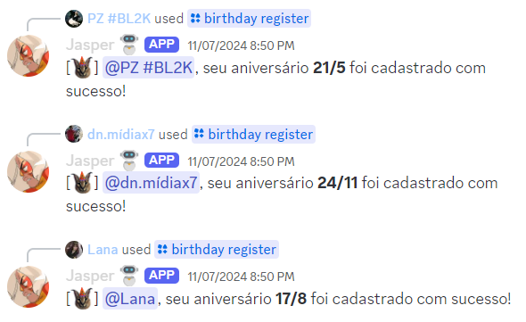

Os membros precisam ter registrado os aniversários com o comando /birthday register antes de eu poder anunciar.
• Configurar essa funcionalidade é algo restrito aos membros do servidor com permissão de Administrador.
• Segue um pequeno tutorial de como configurá-lo:
1. Use o comando /config birthday, escolha o canal de texto onde quer
que os aniversários apareçam, e configure as opções adicionais se quiser: cargo de
aniversariante, cargo de menção, e uma mensagem personalizada.
Se você não colocar nenhuma mensagem personalizada, vou usar frases aleatórias pré-definidas em suas
mensagens. É até mais legal, né?
2. Depois de usar o comando e eu confirmar que deu tudo certo, a função já vai estar ativada no
servidor!
3. Prontinho! Agora é apenas aguardar até que algum membro do seu servidor faça aniversário. Os
aniversários são sempre anunciados à meia-noite do horário de Brasília.
4. Para editar as configurações, basta usar o comando /config birthday
novamente. Para desabilitar, use o comando
/config server e selecione o botão.
5. Ah, e não esquece de lembrar o pessoal de registrar a data de aniversário com /birthday register. Cada membro só pode alterar a data a cada 180 dias,
então é bom pensar duas vezes antes de mandar qualquer coisa errada.

• Espero que você se aproveite! Qualquer dúvida, sinta-se livre para perguntar no meu canal de suporte.
Publicado . Dependendo da data de publicação, o texto pode estar levemente desatualizado.